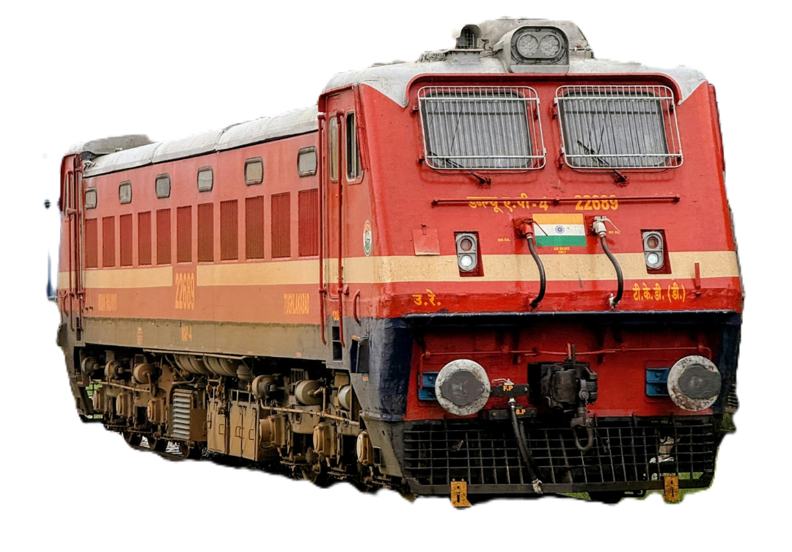

World's 4th largest railway network. A secure, prestigious government career with excellent benefits — available for all education levels.

Indian Railways is one of the largest employers in the world with over 13 lakh employees. Recruitment is done through Railway Recruitment Boards (RRBs) across India. Jobs range from Group A gazetted officers to Group D non-gazetted staff — making it accessible to candidates from 10th pass to graduates and engineers.
Railway Pass — employees and family get free/concessional train travel across India — a unique and highly valued perk.